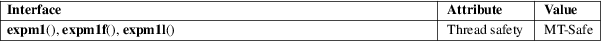

expm1, expm1f, expm1l − exponential minus 1
Math library (libm, −lm)
#include <math.h>
double
expm1(double x);
float expm1f(float x);
long double expm1l(long double x);
Feature Test Macro Requirements for glibc (see feature_test_macros(7)):
expm1():
_ISOC99_SOURCE || _POSIX_C_SOURCE >= 200112L
|| _XOPEN_SOURCE >= 500
|| /* Since glibc 2.19: */ _DEFAULT_SOURCE
|| /* glibc <= 2.19: */ _BSD_SOURCE || _SVID_SOURCE
expm1f(),
expm1l():
_ISOC99_SOURCE || _POSIX_C_SOURCE >= 200112L
|| /* Since glibc 2.19: */ _DEFAULT_SOURCE
|| /* glibc <= 2.19: */ _BSD_SOURCE || _SVID_SOURCE
These functions return a value equivalent to
exp(x) − 1
The result is computed in a way that is accurate even if the value of x is near zero—a case where exp(x) − 1 would be inaccurate due to subtraction of two numbers that are nearly equal.
On success, these functions return exp(x) − 1.
If x is a NaN, a NaN is returned.
If x is +0 (−0), +0 (−0) is returned.
If x is positive infinity, positive infinity is returned.
If x is negative infinity, −1 is returned.
If the result overflows, a range error occurs, and the functions return −HUGE_VAL, −HUGE_VALF, or −HUGE_VALL, respectively.
See math_error(7) for information on how to determine whether an error has occurred when calling these functions.
The following
errors can occur:
Range error, overflow
errno is set to ERANGE (but see BUGS). An overflow floating-point exception (FE_OVERFLOW) is raised.
For an explanation of the terms used in this section, see attributes(7).

C11, POSIX.1-2008.
C99, POSIX.1-2001. BSD.
Before glibc 2.17, on certain architectures (e.g., x86, but not x86_64) expm1() raised a bogus underflow floating-point exception for some large negative x values (where the function result approaches −1).
Before approximately glibc 2.11, expm1() raised a bogus invalid floating-point exception in addition to the expected overflow exception, and returned a NaN instead of positive infinity, for some large positive x values.
Before glibc 2.11, the glibc implementation did not set errno to ERANGE when a range error occurred.
exp(3), log(3), log1p(3)